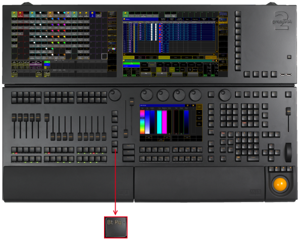

Bt Pg - (Button Page) Key
The key Bt Pg - is located left the 100 mm fader.

Location key Bt Pg -
- Pressing Bt Pg - executes the ButtonPage command. That is: jumping to the previous ButtonPage.
- If you press and hold Bt Pg -, you will automatically jump to the first ButtonPage.